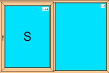
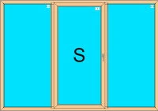
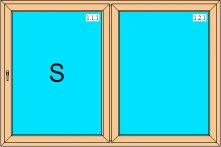
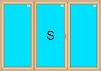
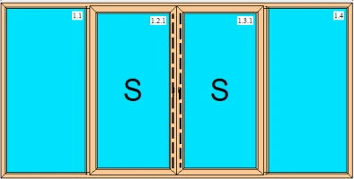

Skjutdörrar
Skjutdörrar i PVC med olika konstruktioner och i olika prisklasser – upp till 8 meter breda.

Vi erbjuder skjutdörrar med olika konstruktioner och i olika prisklasser. Maximal höjd är 2,5 m och maximal bredd 8 m – och det går att bygga på med glaspartier. Öppningen är hälften av dörrens bredd. Dörren har vädringsfunktion och glider smidigt åt sidan.
Enligt Boverkets regler ska glaset upp till 60 cm från golvet vara säkerhetsglas, både på insidan och utsidan. Det är möjligt bara om glasrutan delas med en impost – annars ska hela glaset vara säkerhetsglas. Säkerhetsglas är antingen härdat glas (som en duschvägg) eller laminerat glas (som en bilruta).
Spanjoletten låser dörren runt om. Säkerhetsklass V-1 och V-2 finns som tillval. Försäkringsbolag kräver att dörren ska vara låsbar med nyckel – se olika alternativ av handtag och lås under Tillval.
Modell S
Standardmodell som tillverkas upp till 3,4 m bredd som tvådelad och 6 m bredd som fyrdelad. System 3130 S är anpassat för upp till 130 kg och system 4150 S upp till 150 kg. Dörren glider in i karmen i nedersta delen och fastnar i vädringsläge; översta delen trycker man in manuellt.
Modell Z
Har självindragande mekanism: när handtaget vrids dras dörren in i öppningen. Man slipper trycka in dörren, vilket är behagligt vid bredare konstruktioner. System 160-Z är anpassat för 160 kg och system 200-Z för 200 kg.
Vi erbjuder både frakt och montering av partierna, med ROT-avdrag och till rimlig kostnad. Tillverkning och utställning finns i Lilla Edet.
Konfigurationer
Alla ritningar är sedda från insidan, när du står framför dörren.









Berätta vad du planerar – vi tar fram en offert.
Allt tillverkas på beställning i vår fabrik i Lödöse. Välkommen att besöka utställningen i Lilla Edet, eller skicka en förfrågan direkt.
- 0707-14 40 01
- info@fvab.se
- Göteborgsvägen 90, Lilla Edet